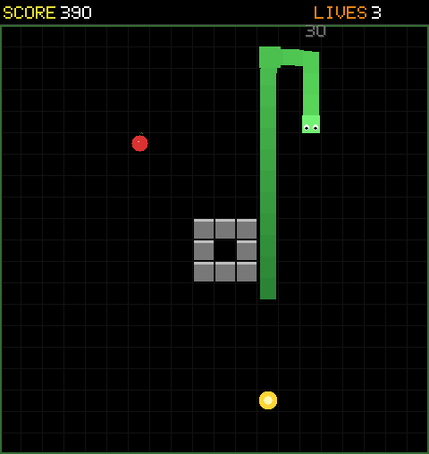
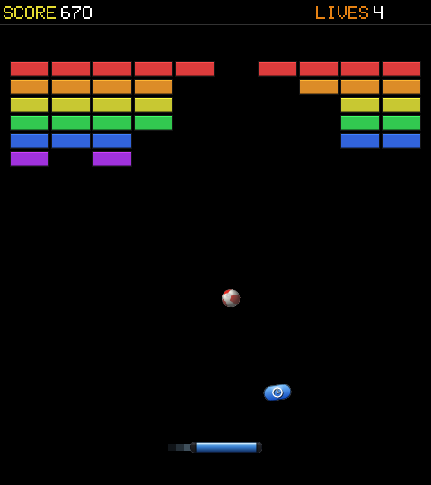
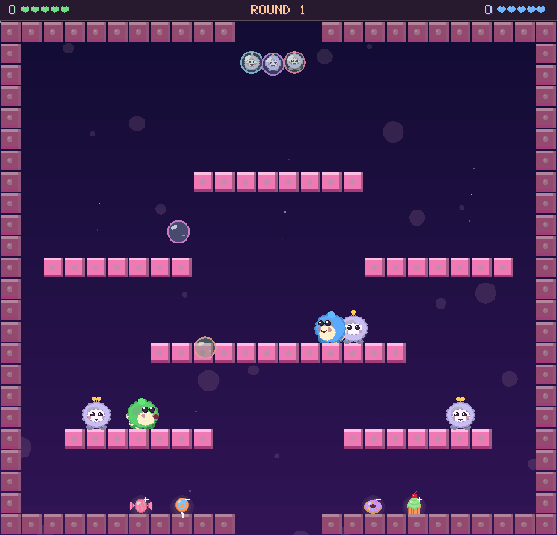

THE BLIP API
A small Rust kit for games with big arcade energy. Blip gives you the canvas, frame loop, bitmap lettering, sound, and cabinet bridge; your game keeps the rules and the personality.
One loop, one canvas
Create a Blip canvas, update your state with elapsed seconds, draw a frame, and hand control back to Macroquad. Blip keeps the virtual resolution steady while the browser or desktop window scales it.
use blip::{window_conf, Blip, BLIP_BLACK};
fn conf() -> blip::macroquad::window::Conf {
window_conf("MY GAME", 480, 540)
}
#[blip::macroquad::main(conf)]
async fn main() {
let mut blip = Blip::new(480, 540);
let mut game = Game::new();
loop {
let dt = blip.delta_time;
game.update(dt);
blip.clear(BLIP_BLACK);
game.draw(&blip);
blip.next_frame(60).await;
}
}
Input that meets players where they are

Pressed-this-frame input is handy for actions; held input is for movement. The browser cabinet maps its controls into the same key events, so your game logic stays portable.
use blip::input::{key_active, key_pressed,
BLIP_KEY_LEFT, BLIP_KEY_SPACE};
if key_active(BLIP_KEY_LEFT) {
player.x -= SPEED * dt;
}
if key_pressed(BLIP_KEY_SPACE) {
player.fire();
}Pixels, shapes, and arcade text
Draw in virtual-canvas pixels with the built-in shapes, textures, palette, and legible bitmap font. Blip applies its CRT glass and scanline finish around the scene.
Shape + sprite
blip.fill_rect(x, y, w, h, BLIP_RED);
blip.draw_line(x1, y1, x2, y2, BLIP_WHITE);
blip.fill_circle(cx, cy, r, BLIP_YELLOW);
blip.draw_texture(&ship, x, y, w, h);5×7 bitmap font
blip.draw_text("READY!", 12.0, 32.0,
2.0, BLIP_CYAN);
blip.draw_centered("PRESS FIRE", 280.0,
3.0, BLIP_WHITE);Game-ready building blocks
Math + collision
Inclusive random integers, float ranges, wraparound, angle steering, easing, and common overlap tests.
if rects_overlap(ball.x, ball.y, 12.0, 12.0,
brick.x, brick.y, 44.0, 18.0) {
brick.hit();
}Session + timer
Keep score, lives, and level together. Countdowns return a one-frame signal when they expire.
let mut session = Session::new(3);
session.add_score(100);
if timer.tick(dt) { respawn(); }Effects + entity pools
Score popups, rings, screen shake, bursts, and fixed-capacity entity arrays help a hit feel like a hit.
fx.popup(x, y, "+100", BLIP_YELLOW);
fx.burst(x, y, 10, 90.0, BLIP_CYAN);
fx.update(dt);
fx.draw(&blip);Cabinet bridge
Coins, player count, high scores, controls, touch, and haptics. On native builds, browser-only calls safely do nothing.
web::spend_coin();
web::set_players(1);
web::report_score(session.score);
The effect layer handles common motion and timing; a game can keep its own drawing style. This is useful when a stock burst is close, but your particles need custom colors, shapes, or animation. See it in Bubbler ↗
Tune mechanics with bot playthroughs
A bot gives a coding agent a repeatable way to probe game feel. Ask it to measure a specific goal, make one tuning change at a time, and run several trials with the same setup. Blip prints a RESULT line at game over or when the time limit is reached; compare those stats before deciding whether a change helped.
- Build the game in release mode and capture a baseline from several runs.
- Change one mechanic or tuning value, then repeat the same runs.
- Compare outcomes and relevant counters; keep the change only if the evidence supports it.
Bouncer records lost lives, the speed at each loss, and level clear times. Add BLIP_BOT_SHOTS to save frames for visual review too. The bot runs only in native builds.
cargo build --release -p bouncer
BLIP_BOT=1 BLIP_BOT_MAXT=300 \
xvfb-run -a -s "-screen 0 720x810x24" \
target/release/bouncer
# Optional screenshots every 5 game seconds
BLIP_BOT=1 BLIP_BOT_SHOTS=/tmp/bouncer-shots \
BLIP_BOT_SHOT_EVERY=5 target/release/bouncerGive your coding agent a focused experiment. For example:
Read AGENTS.md, crates/bouncer/src/bot.rs, and the Bouncer
RESULT stats. Run five baseline bot playthroughs and summarize
lives_lost, lost_at_speed*, and t_clear*.
Tune only the ball's top speed to make late rallies tense but
recoverable. After each change, rebuild and run the same five
trials. Show baseline and new results, explain the tradeoff, and
keep the change only if the stats support the goal.Build your first Blip game with an agent.
Claude Code and Codex can read this repo, follow its Rust patterns, and help build a playable game. Treat the agent like a teammate: give it a specific brief, point it at a working example, and ask it to build and run the result in small steps.
AGENTS.md, docs/blip.md, and a nearby game such as crates/meteors.Try this as your first prompt:
Read AGENTS.md, docs/blip.md, and crates/serpent/src/main.rs.
Create a new Rust arcade game crate named orbit_dash using the blip API.
It should have a title screen, keyboard and cabinet input, score/lives,
and a short replayable round. Keep the first version small and playable.
Build it, run any relevant checks, and tell me how to launch it natively.
Do not edit generated files under web/.Then iterate: ask for a game-feel adjustment, an enemy pattern, a sound, or a touch-control pass. The API is small on purpose; the game’s character should come from your idea.
Blip is built on Macroquad. Games run natively during development and can be compiled to WebAssembly for this arcade.